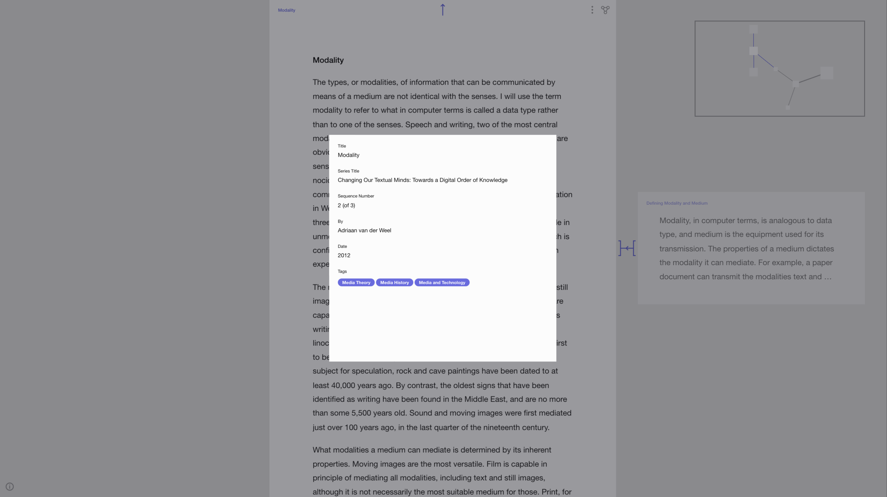
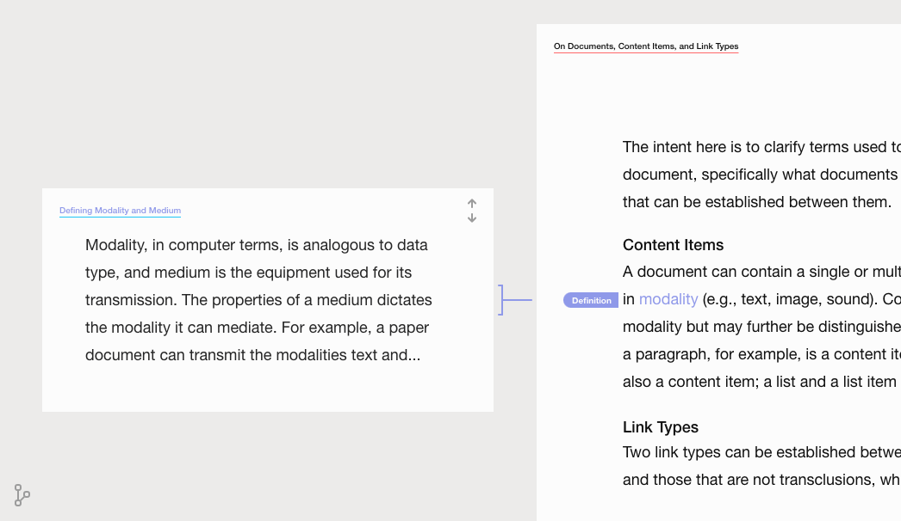
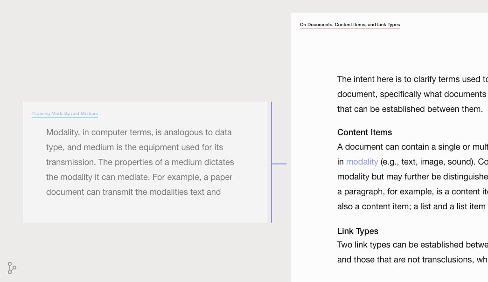

Prototype: View Modes and Links (Round 06)
In this entry, elements in the two view modes are redesigned.
Redesign of the Location Frame
In the previous version of the location frame, traversing documents meant that movement was animated both in the main frame and the location frame.
In the current version, all documents are shown in the location frame, and the movement is animated through a change in link color and node brightness.
The brightest document is the one that is active (i.e., open), and the purple links indicate the inactive (linked documents).
Transition Animations: Spawning Alias Documents
The animation of the links now split into separate links as multiple aliases spawn.

Addition of a Legend
The legend — accessible through the info icon in the bottom left corner — provides information about the various link types.
Addition of a Metadata Window

Interactive Prototype
The next entry explores the utilization of metadata to filter documents and links.
Discarded Attempts
Visual Distinction of Links
Position and Alignment In the image below, in addition to the left-bracket link, the title, the link, the label, and the linked text are aligned to emphasize that it points from the entire document on the left to a particular part in the document on the right.

In the image below, the label is placed close to the linked text within the open document.

Design of Brackets

